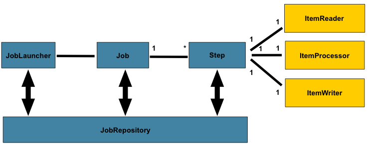
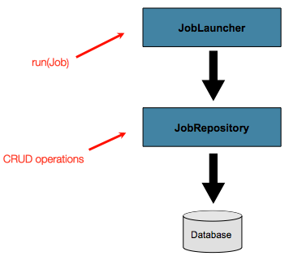
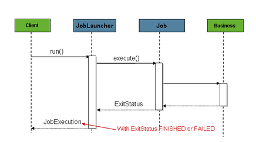
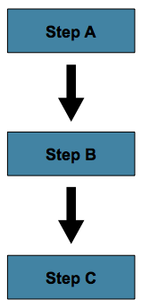
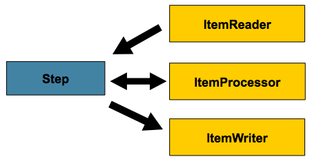

Loading...
Présentation Spring Batch
Pourquoi un framework de batch?
- Framework pour le web
- Framework de persistence
- En finir avec :
public static void main(String args){} - Fournir une solution open source pour le développement d'un batch
Pourquoi passer à Spring Batch?
Un Batch est une répétition en très grand nombre d’opérations unitaires
- Utilisation de Spring
- Traitement par lot
- Gestion des transactions
- Mécanisme de reprise sur erreur
- Facilite la maintenance du code
- Facilite la testabilité du code
Pourquoi ne pas utiliser Spring Batch?
- Spring Batch n'est pas un scheduler
Concepts

Job / Job instance / Job execution

Job / Job instance / Job execution
BATCH_JOB_INSTANCE
| JOB_INST_ID | JOB_NAME |
| 1 | EndOfDayJob |
BATCH_JOB_INSTANCE
| JOB_INST_ID | TYPE_CD | KEY_NAME | DATE_VAL |
| 1 | DATE | schedule.Date | 2012-01-01 |
BATCH_JOB_INSTANCE
| JOB_EXEC_ID | JOB_INST_ID | START_TIME | END_TIME | STATUS |
| 1 | 1 | 2012-01-01 21:00 | 2012-01-01 21:30 | FAILED |
Job / Job instance / Job execution
BATCH_JOB_INSTANCE
| JOB_INST_ID | JOB_NAME |
| 1 | EndOfDayJob |
| 2 | EndOfDayJob |
BATCH_JOB_INSTANCE
| JOB_INST_ID | TYPE_CD | KEY_NAME | DATE_VAL |
| 1 | DATE | schedule.Date | 2012-01-01 |
| 2 | DATE | schedule.Date | 2012-02-01 |
BATCH_JOB_INSTANCE
| JOB_EXEC_ID | JOB_INST_ID | START_TIME | END_TIME | STATUS |
| 1 | 1 | 2012-01-01 21:00 | 2012-01-01 21:30 | FAILED |
| 2 | 1 | 2012-02-01 21:00 | 2012-02-01 21:30 | COMPLETED |
| 1 | 1 | 2012-02-01 21:31 | 2012-02-01 22:29 | COMPLETED |
Job repository

Exemple de job launcher : SimpleJobLauncher

Configuration du jobLauncher
<bean id="transactionManager" class="org...ResourcelessTransactionManager" />
<bean id="jobRepository" class="org....MapJobRepositoryFactoryBean" >
<property name="transactionManager" ref="transactionManager" />
</bean>
<bean id="jobLauncher" class="org...SimpleJobLauncher" >
<property name="jobRepository" ref="jobRepository" />
</bean>
Execution d'un job
mvn exec:java -Dexec.mainClass=CommandLineJobRunner
-Dexec.args="batch.xml statification"java CommandLineJobRunner batch.xml statificationLe job


- Un enchaînement d'étape plus ou moins complexe
Le step

- Un processus 'Chunk-Oriented' par défaut
- C'est là que l'on retrouve les traitements métier
Le step

Configuration du job
<job id="statification">
<step id="purgeDatesAnterieuresDateDuJour" next="filtreDOF">
<tasklet ref="purgeDateTask" />
<listeners>
<listener ref="stepLoggerListener" />
</listeners>
</step>
...
</job>
Configuration du job
<job id="statification">
...
<step id="filtreCritereElaboration">
<tasklet transaction-manager="txManager" >
<chunk reader="criteresReader" processor="compositeProcessor"
writer="DOFWriter" commit-interval="100" />
<listeners>
<listener ref="chunkLoggerListener" />
<listener ref="itemLoggerListener" />
</listeners>
</tasklet>
<listeners>
<listener ref="stepLoggerListener" />
<listener ref="stepDOFListener" />
</listeners>
</step>
...
</job>Configuration du job
<job id="statification">
...
<listeners>
<listener ref="jobLoggerListener" />
<listener ref="authenticationListener" />
</listeners>
</job>
Configuration du reader
<bean id="criteresReader" class="org.springframework.batch.item.database.JdbcPagingItemReader">
<property name="dataSource" ref="dataSource" />
<property name="queryProvider">
<bean class="org...SqlPagingQueryProviderFactoryBean">
<property name="dataSource" ref="dataSource" />
<property name="selectClause" value="select *" />
<property name="fromClause" value="FROM ST.CRITETB" />
<property name="sortKey" value="ID" />
</bean>
</property>
<property name="pageSize" value="100" />
<property name="rowMapper">
<ref local="critereElaborationRowMapper"/>
</property>
</bean>
Configuration du composite processor
<bean id="compositeProcessor" class="org...CompositeItemProcessor">
<property name="delegates">
<list>
<ref local="activeCritereProcessor" />
<ref local="DOFProcessor" />
</list>
</property>
</bean>